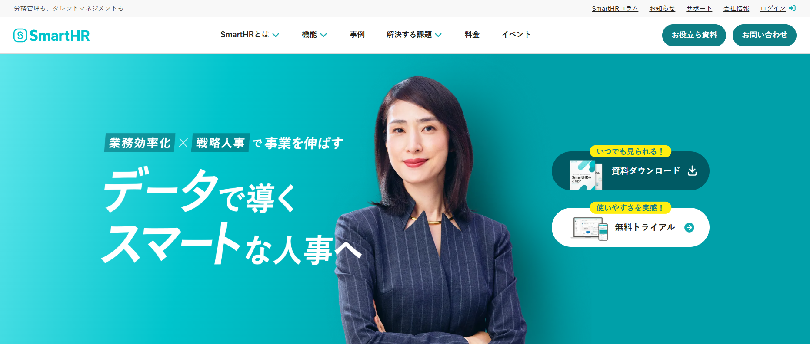
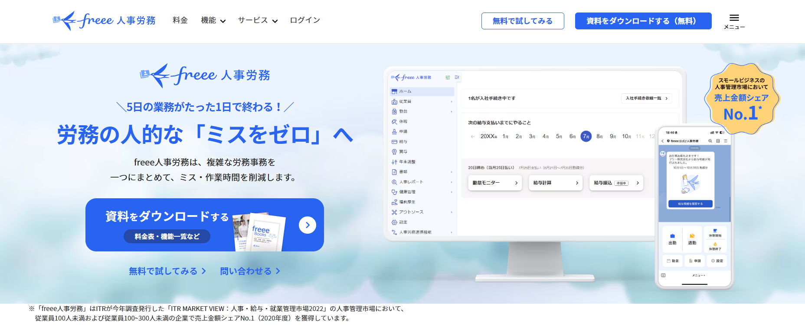
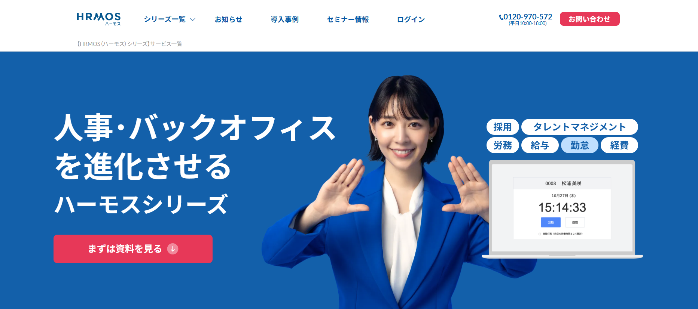

マーケットリサーチ
3C分析
（顧客分析を記載）
（競合分析を記載）
（自社分析を記載）
SWOT分析
| プラス要因 | マイナス要因 | |
|---|---|---|
| 内部環境 | Strengths（強み） （3つ以上記載） | Weaknesses（弱み） （3つ以上記載） |
| 外部環境 | Opportunities（機会） （3つ以上記載） | Threats（脅威） （3つ以上記載） |
STP分析
（セグメンテーションを記載）
（ターゲティングを記載）
（ポジショニングを記載）
4P / 4C 分析
| 4P（売り手視点） | 内容 | 4C（買い手視点） | 内容 |
|---|---|---|---|
| Product （製品） | （記載） | Customer Value （顧客価値） | （記載） |
| Price （価格） | （記載） | Cost （顧客コスト） | （記載） |
| Place （流通） | （記載） | Convenience （利便性） | （記載） |
| Promotion （販促） | （記載） | Communication （対話） | （記載） |
競合サイト分析
サイト名：SmartHR
URL：https://smarthr.jp/
サイトの第一印象：シンプルで洗練されたデザインが印象的で、信頼感のあるHRサービスサイト。大きなキャッチコピーとビジュアルによりサービスの価値が直感的に伝わる。
良い点：シンプルで見やすいデザイン、サービスの特徴やメリットが分かりやすく整理されている、導入事例や実績が掲載されており信頼性が高い、資料ダウンロードや無料トライアルなどのCTAが目立つ。
改善できそうな点：情報量が多く、ページが長く感じる部分がある。人事データ分析の具体的な活用イメージがやや少ない。
自分のサイトに取り入れたい要素：シンプルで見やすいUIデザイン、わかりやすいキャッチコピーとビジュアル、導入事例による信頼性の訴求。

サイト名：freee人事労務
URL：https://www.freee.co.jp/hr/
サイトの第一印象：明るく親しみやすいデザインで、はじめて見たユーザーにも分かりやすい印象がある。大きなビジュアルと明快なコピーにより、労務業務を効率化するサービスであることが伝わりやすい。
良い点：明るい配色で親しみやすいデザイン、サービス内容がシンプルに整理されていて理解しやすい、CTAボタンが目立ち資料請求や無料体験への導線が分かりやすい、画面イメージがあり利用後のイメージを持ちやすい。
改善できそうな点：機能説明がやや簡潔で、詳細比較をしたいユーザーには情報が少なく感じる。人事データ分析やダッシュボード活用の訴求は弱めに見える。
自分のサイトに取り入れたい要素：親しみやすい配色、CTAが分かりやすい導線設計、画面イメージを使った直感的な説明。

サイト名：HRMOS
URL：https://hrmos.co/
サイトの第一印象：ビジネス向けらしい落ち着いた印象と専門性の高さが伝わるデザイン。トップページから幅広い人事業務に対応するサービスであることが分かりやすい。
良い点：信頼感のある配色とデザイン、採用・労務・給与・勤怠など対応領域が一目で分かる、サービスの専門性が伝わりやすい、資料請求ボタンが目立ち行動につながりやすい。
改善できそうな点：情報量が多く、やや堅い印象を受ける。初めて見る人には少し難しそうに見える可能性がある。
自分のサイトに取り入れたい要素：サービス領域を一目で伝える見せ方、信頼感のあるビジネス向けデザイン、資料請求につながる分かりやすいCTA配置。
